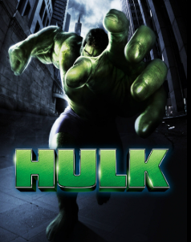
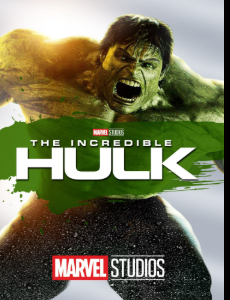
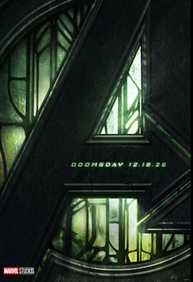
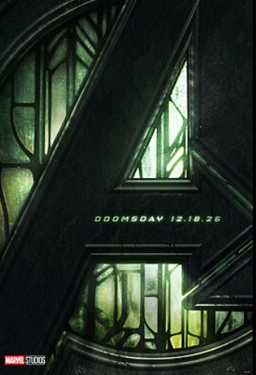

Hulk
Robert Bruce Banner, also known as the Hulk, is a brilliant scientist who transforms into a powerful green-skinned giant when he becomes angry or stressed.
Hulk is a superhero created by Stan Lee and Jack Kirby who appears in American comic books published by Marvel Comics. The character first appeared in The Incredible Hulk #1 (May 1962), and was later featured in The Avengers #85 (October 1963). Hulk is a member of the superhero team the Avengers and has been portrayed as one of Marvel's most popular characters.
Hulk's character has undergone several changes over the years. In his early appearances, he was depicted as a more traditional superhero with a strong moral code. Over time, his character evolved to include more complex themes such as his relationship with his teammates and his struggles with power and responsibility.
Hulk has been adapted into various forms of media including films, television series, animated shows, and video games. His portrayal in these adaptations has often emphasized his strength, leadership qualities, and his role as a protector of both Asgard and Earth.
Movies:
 


 
